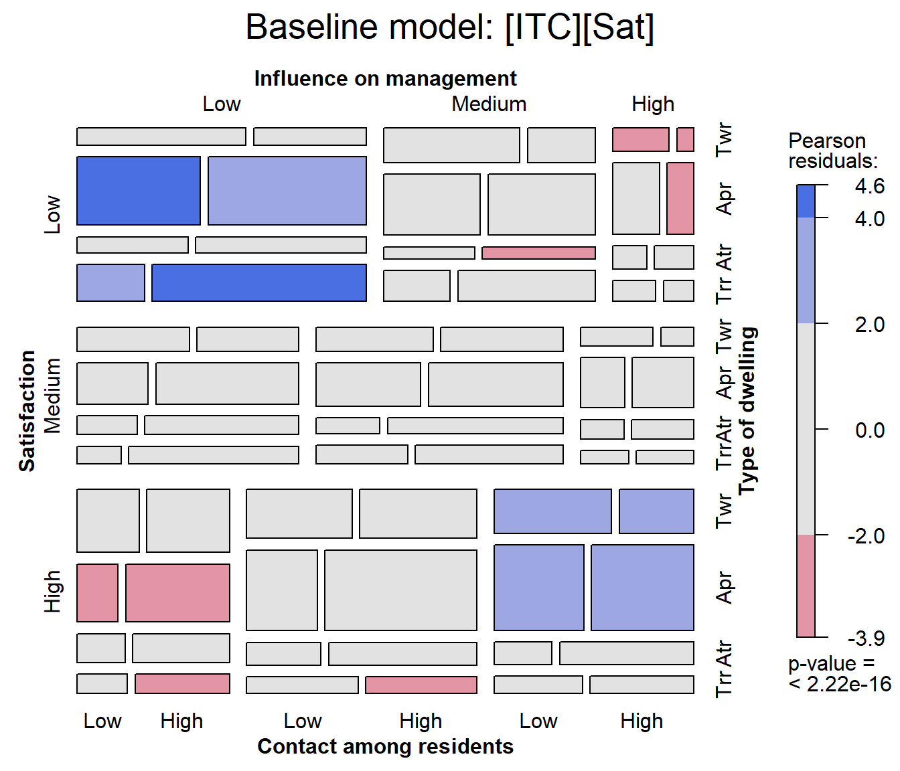
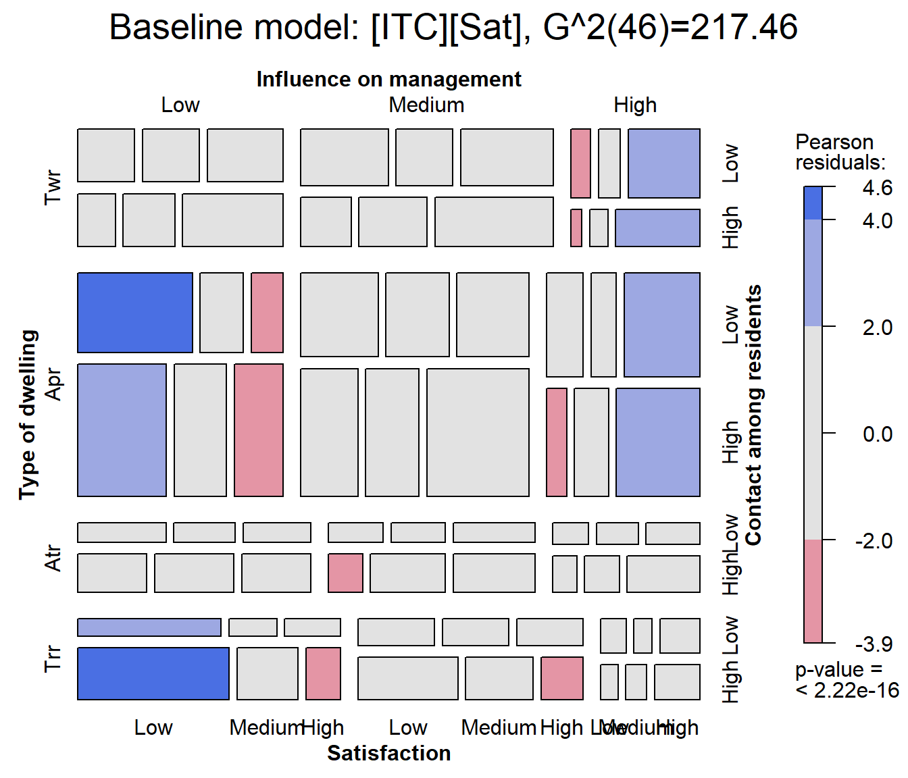

5. Demo - Housing Data
Michael Friendly
2025-03-24
Source:vignettes/a5-demo-housing.Rmd
a5-demo-housing.RmdThis vignette was one of a series of demo() files in the
package. It is still there as demo("housing"), but is now
presented here with additional commentary and analysis, designed to
highlight some aspects of analysis of categorical data and graphical
display.
Housing data
The content here is the dataset MASS::housing, giving a
4-way,
frequency table of 1681 individuals from the Copenhagen Housing
Conditions Survey, classified by their:
- Satisfaction (
Sat) with their housing circumstances (low, medium or high), -
Typeof rental dwelling (Tower, Apartment, Atrium or Terrace) - perceived influence (
Infl) on management of the property (low, medium, high), and - degree of contact (
Cont) with other residents (low or high)
Load the data:
data(housing, package="MASS")
str(housing)
## 'data.frame': 72 obs. of 5 variables:
## $ Sat : Ord.factor w/ 3 levels "Low"<"Medium"<..: 1 2 3 1 2 3 1 2 3 1 ...
## $ Infl: Factor w/ 3 levels "Low","Medium",..: 1 1 1 2 2 2 3 3 3 1 ...
## $ Type: Factor w/ 4 levels "Tower","Apartment",..: 1 1 1 1 1 1 1 1 1 2 ...
## $ Cont: Factor w/ 2 levels "Low","High": 1 1 1 1 1 1 1 1 1 1 ...
## $ Freq: int 21 21 28 34 22 36 10 11 36 61 ...Variables, levels and models
Satisfaction (Sat) of these householders with their
present housing circumstances is the outcome variable
here.
For purposes of analysis, note that Sat is an ordered
factor with levels "Low" < "Medium" < "High".
Note also that Influence, with the same levels is just a “Factor”, not an ordered one.
I consider here just models using
glm(..., family=poisson) or the equivalent in
MASS::loglm().
The ordering of factor levels is important in graphical displays. We
don’t want to see them ordered alphabetically, “High”, “Low”, “Medium”.
The housing data.frame was constructed so that the levels
of Sat and Infl appear in the dataset in their
appropriate order.
Other models, e.g., the proportional odds model, fit
using MASS:polr() can take the ordinal nature of
satisfaction into account. In glm() one could re-assign
Infl as an ordered factor and examine linear vs. non-linear
associations for this factor. But I don’t do this here.
Null model
The most ignorant model asserts that all the table factors are
mutually independent. In symbolic notation, this is
[S] [I] [T] [C] where all terms in separate
[ ] are supposed to be independent. This is
Freq ~ Sat + Infl + Type + Cont as a formula for
glm().
house.null <- glm(Freq ~ Sat + Infl + Type + Cont, family = poisson,
data = housing)Baseline model
When Sat is the outcome variable, a minimal
baseline model should allow for all associations among
the predictors, symbolized as [S] [I T C]. That is,
Influence, Type and Contact may be associated in arbitrary ways, just as
multiple predictors can be correlated in regression models.
In this framework, what remains to be explained is whether/how
Sat depends on the combinations of the other variables. The
baseline model therefore includes the full three-way term for the
predictors.
house.glm0 <- glm(Freq ~ Sat + Infl*Type*Cont, family = poisson,
data = housing)Both of these models fit terribly, but we can always use
anova(mod1, mod2,...) to compare the relative fits
of nested models.
anova(house.null, house.glm0, test = "Chisq")
## Analysis of Deviance Table
##
## Model 1: Freq ~ Sat + Infl + Type + Cont
## Model 2: Freq ~ Sat + Infl * Type * Cont
## Resid. Df Resid. Dev Df Deviance Pr(>Chi)
## 1 63 295.35
## 2 46 217.46 17 77.896 9.045e-10 ***
## ---
## Signif. codes: 0 '***' 0.001 '**' 0.01 '*' 0.05 '.' 0.1 ' ' 1Visualising model fit
The baseline model is shown in the mosaic plot below. Note that this
is applied not to the housing data, but rather to the
house.glm0 object (of class glm) resulting to
a call to vcdExtra::mosaic.glm().
With four variables in the mosaic, labeling of the variable names and
factor levels is a bit tricky, because labels must appear on all four
sides of the plot. The labeling_args argument can be used
to set more informative variable names and abbreviate factor levels
where necessary.
# labeling_args for mosaic()
largs <- list(set_varnames = c(
Infl="Influence on management",
Cont="Contact among residents",
Type="Type of dwelling",
Sat="Satisfaction"),
abbreviate=c(Type=3))
mosaic(house.glm0,
labeling_args=largs,
main='Baseline model: [ITC][Sat]')
## Warning: no formula provided, assuming ~Sat + Infl + Type + Cont
In this plot we can see largish positive residuals in the blocks corresponding to (low satisfaction, low influence) and (high satisfaction, high influence) and clusters of largish negative residuals in the opposite corners.
By default, variables are used in the mosaic display in their order
in the data table or frequency data.frame. The warning reminds us that the order of
conditioning used is ~Sat + Infl + Type + Cont.
Ordering the variables in the mosaic
For mosaic.glm(), the conditioning order of variables in
the mosaic can be set using the formula argument. Here, I
rearrange the variables to put Sat as the last variable in
the splitting / conditioning sequence. I also use
vcdExtra::modFit() to add the LR
fit statistic to the plot title.
mosaic(house.glm0,
formula = ~ Type + Infl + Cont + Sat,
labeling_args=largs,
main=paste('Baseline model: [ITC][Sat],', modFit(house.glm0))
)
Adding association terms
Clearly, satisfaction depends on one or more of the predictors,
Infl, Type and Cont and possibly
their interactions.
As a first step it is useful to consider sequentially adding the
association terms Infl:Sat, Type:Sat,
Cont:Sat one at a time. This analysis is carried out using
MASS::addterm().
MASS::addterm(house.glm0,
~ . + Sat:(Infl + Type + Cont),
test = "Chisq")
## Single term additions
##
## Model:
## Freq ~ Sat + Infl * Type * Cont
## Df Deviance AIC LRT Pr(Chi)
## <none> 217.46 610.43
## Sat:Infl 4 111.08 512.05 106.371 < 2.2e-16 ***
## Sat:Type 6 156.79 561.76 60.669 3.292e-11 ***
## Sat:Cont 2 212.33 609.30 5.126 0.07708 .
## ---
## Signif. codes: 0 '***' 0.001 '**' 0.01 '*' 0.05 '.' 0.1 ' ' 1Based on this, it is useful to consider a “main-effects” model for satisfaction, adding all three two-way terms involving satisfaction.
The update() method provides an easy way to add (or
subtract) terms from a fitted model object. In the model formula,
. stands for whatever was on the left side
(Freq) or on the right side
(Sat + Infl*Type*Cont) of the model
(house.glm0) that is being updated.
house.glm1 <- update(house.glm0,
. ~ . + Sat*(Infl + Type + Cont))For comparison, we note that the same model can be fit using the
iterative proportional scaling algorithm of
MASS::loglm().
(house.loglm1 <- MASS::loglm(Freq ~ Infl * Type * Cont +
Sat*(Infl + Type + Cont), data = housing))
## Call:
## MASS::loglm(formula = Freq ~ Infl * Type * Cont + Sat * (Infl +
## Type + Cont), data = housing)
##
## Statistics:
## X^2 df P(> X^2)
## Likelihood Ratio 38.66222 34 0.2671359
## Pearson 38.90831 34 0.2582333Did the model get better?
As before, anova() tests the added contribution of each
more complex model over the one before. The residual deviance
has been reduced from
for the baseline model house.glm0 to
for the revised model house.glm1. The difference,
tests the collective additional fit provided by the two-way association
of satisfaction with the predictors.
anova(house.glm0, house.glm1, test="Chisq")
## Analysis of Deviance Table
##
## Model 1: Freq ~ Sat + Infl * Type * Cont
## Model 2: Freq ~ Sat + Infl + Type + Cont + Infl:Type + Infl:Cont + Type:Cont +
## Sat:Infl + Sat:Type + Sat:Cont + Infl:Type:Cont
## Resid. Df Resid. Dev Df Deviance Pr(>Chi)
## 1 46 217.456
## 2 34 38.662 12 178.79 < 2.2e-16 ***
## ---
## Signif. codes: 0 '***' 0.001 '**' 0.01 '*' 0.05 '.' 0.1 ' ' 1Visualize model glm1
The model house.glm1 fits reasonably well,
G^2(34)=38.66, so most residuals are small. In the mosaic below, I use
gp=shading_Friendly to shade the tiles so that positive and
negative residuals are distinguished by color, and they are filled when
the absolute value of the residual is outside
.
mosaic(house.glm1,
labeling_args=largs,
main=paste('Model [IS][TS][CS],', modFit(house.glm1) ),
gp=shading_Friendly)
One cell is highlighted here: The combination of medium influence, low contact and tower type, is more likely to give low satisfaction than the model predicts. Is this just an outlier, or is there something that can be interpreted and perhaps improve the model fit? It is hard tell, but the virtues of mosaic displays are that they help to:
- diagnose overall patterns of associations,
- spot unusual cells in relation to lack of fit of a given model.
Can we drop any terms?
When we add terms using MASS::addterm(), they are added
sequentially. It might be the case that once some term is added, a
previously added term is no longer important. Running
MASS::dropterm() on the housel.glm1 model
checks for this.
MASS::dropterm(house.glm1, test = "Chisq")
## Single term deletions
##
## Model:
## Freq ~ Sat + Infl + Type + Cont + Infl:Type + Infl:Cont + Type:Cont +
## Sat:Infl + Sat:Type + Sat:Cont + Infl:Type:Cont
## Df Deviance AIC LRT Pr(Chi)
## <none> 38.662 455.63
## Sat:Infl 4 147.780 556.75 109.117 < 2.2e-16 ***
## Sat:Type 6 100.889 505.86 62.227 1.586e-11 ***
## Sat:Cont 2 54.722 467.69 16.060 0.0003256 ***
## Infl:Type:Cont 6 43.952 448.92 5.290 0.5072454
## ---
## Signif. codes: 0 '***' 0.001 '**' 0.01 '*' 0.05 '.' 0.1 ' ' 1Note that the three-way term Infl:Type:Cont is not
significant. However, with Sat as the response, the
associations of all predictors must be included in the model.
What about two-way interactions?
The model so far says that each of influence, type and control have separate, additive effects on the level of satisfaction, what I called a “main-effects” model. It might be the case that some of the predictors have interaction effects, e.g., that the effect of influence on satisfaction might vary with the type of dwelling or the level of control.
An easy way to test for these is to update the main-effects model,
adding all possible two-way interactions for Sat, one at a
time, with addterm().
MASS::addterm(house.glm1,
~. + Sat:(Infl + Type + Cont)^2,
test = "Chisq")
## Single term additions
##
## Model:
## Freq ~ Sat + Infl + Type + Cont + Infl:Type + Infl:Cont + Type:Cont +
## Sat:Infl + Sat:Type + Sat:Cont + Infl:Type:Cont
## Df Deviance AIC LRT Pr(Chi)
## <none> 38.662 455.63
## Sat:Infl:Type 12 16.107 457.08 22.5550 0.03175 *
## Sat:Infl:Cont 4 37.472 462.44 1.1901 0.87973
## Sat:Type:Cont 6 28.256 457.23 10.4064 0.10855
## ---
## Signif. codes: 0 '***' 0.001 '**' 0.01 '*' 0.05 '.' 0.1 ' ' 1The result shows that adding the term Infl:Type:Sat
reduces the deviance
from 38.66 to 16.11. The difference,
reflects a substantial improvement. The remaining two-way interaction
terms reduce the deviance by smaller and non-significant amounts,
relative to house.glm1.
Model fitting should be guided by substance, not just statistical
machinery. Nonetheless, it seems arguably sensible to add one two-way
term to the model, giving house.glm2.
house.glm2 <- update(house.glm1,
. ~ . + Sat:Infl:Type)Model parsimony: AIC & BIC
Adding more association terms to a model will always improve it. The question is, whether that is “worth it”?
“Worth it” concerns the trade-off between model fit and parsimony. Sometimes we might prefer a model with fewer parameters to one that has a slightly better fit, but requires more model terms and parameters.
The AIC and BIC statistics are designed to adjust our assessment of model fit by penalizing it for using more parameters. Equivalently, they deduct from the likelihood ratio a term proportional to the residual of the model. In any case – smaller is better for both AIC and BIC.
These measures are provided by AIC(),
BIC(), and can be used to compare models using
vcdExtra::LRstats().
LRstats(house.glm0, house.glm1, house.glm2)
## Likelihood summary table:
## AIC BIC LR Chisq Df Pr(>Chisq)
## house.glm0 610.43 669.62 217.456 46 <2e-16 ***
## house.glm1 455.63 542.15 38.662 34 0.2671
## house.glm2 457.08 570.91 16.107 22 0.8105
## ---
## Signif. codes: 0 '***' 0.001 '**' 0.01 '*' 0.05 '.' 0.1 ' ' 1By these metrics, model house.glm1 is best on both AIC
and BIC. The increased goodness-of-fit (smaller
)
of model house.glm2 is not worth the extra cost of
parameters in the house.glm2 model.